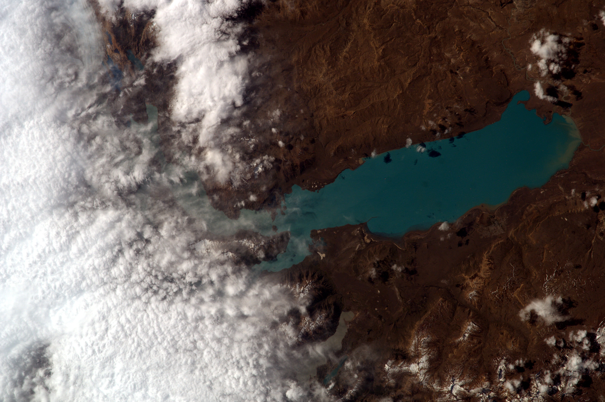

Sally Ride Earthkam Showcase
[Image Credit Earthkam.org]
Recently, I signed up for the Sally Ride EarthKam program run by NASA. When Earthkam runs 4 times a year during mission periods of about a week, students are able to request images of locations on earth along the orbits of the ISS. I sent in my requests for many interesting locations on earth, and started receiving them a few days later. here is a showcase of all the images that I recieved. you can sign up for Sally Ride EarthKam at https://earthkam.org/
Bali, Indonesia  |
Beesdam, South Australia  |
Bouganville Island, Papua New Guinea  |
Bruny Island, Tasmania  |
Cape Portland, Tasmania  |
Clouds Near the Falkland Islands  |
Clouds Near Melbourne  |
Desert in Chad, Africa  |
Desert Near Adelaide, NSW, Australia  |
Desert in Saudi Arabia  |
Early Morning in Japan  |
Cloud cover over the Florida Coast  |
Interesting cloud patterns over the galapagos islands  |
Gibson Desert, South Australia  |
Clouds north of Hawaii  |
Mountanous terrain just south of the Himalayas mountains  |
Lake Gordon and surrounding area, Tasmania  |
Cygnet and lower Hobart area, Tasmania  |
Lake Nasser  |
Land near Andes mountains, South America  |
Settlements around Cairo, Egypt  |
Lonnavale and Bruny Island, Tasmania  |
Morning clouds in the vicinity of Victoria, Australia  |
Terrain bordering Israel  |
Sahara Desert  |
Sea near South America  |
South-west Kalimantan  |
Sri Lanka  |
Suez Gulf, Egypt  |
Outskirts of Bankok, Thailand  |
West-coast New Zealand  |
White Nile river, Africa  |